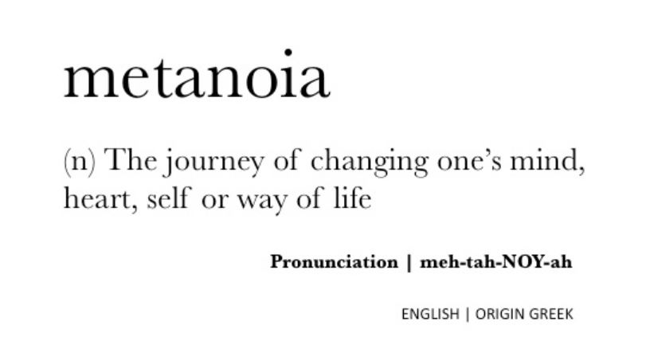

Lynca Saito
Quirky, proud.
Senior Memoir
Stuyvesant High School
AP Global Perspectives

Chapter 4
 An Empty Cup. Edible Words.
About
This website introduces my senior memoir of four chapters, cheesy words, and the bare truth. The hardships of being a writer.
Profile
Born: June 23rd, 2003
Hobbies: Piano, watching anime, sleeping.
A 2021 graduate of Stuyvesant High School.
Pianist, adventurer, thinker. Definitely not a genius.
Books
- Books Quoted
- Home Fire, Kamlia Shamsie
- Norwegian Wood, Haruki Murakami
- The Great Gatsby, Scott Fitzgerald
- The Catcher in the Rye, J.D. Salinger
- The Namesake, Jhumpa Lahiri
- The Picture of Dorian Gray, Oscar Wilde
- Revolutionary Road, Richard Yates
- The Brief Wondrous Life of Oscar Wao, Junot Díaz
- White Teeth, Zadie Smith
- Exit West, Mohsin Hamid
- Waiting, Ha Jin
Where I Am
On a Journey to Discover Myself
Calling Out for the Truth
Words are Mightier than Swords